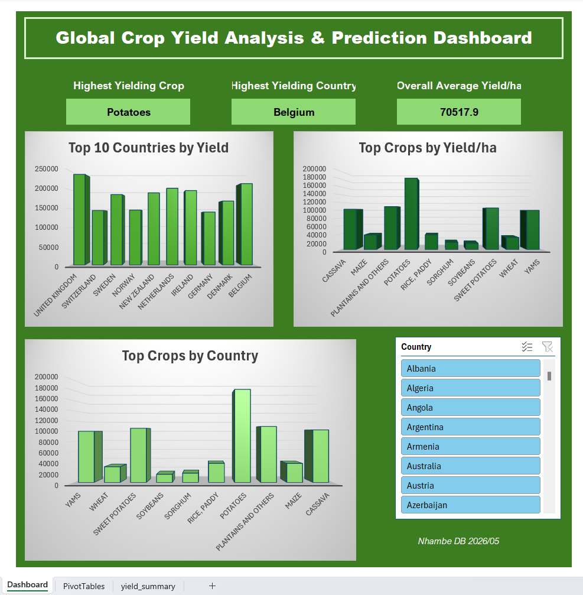

Python & Excel Dashboard Analysing global Crop Yield and predicting yield outcomes.

Developer: Nhambe DB
Tool: Python (Pandas, NumPy, Matplotlib, Seaborn, Scikit-learn) & Microsoft Excel
Sector: Agribusiness / Crop Yield Analysis
This project analyses global crop yield data across multiple countries and crops using Python. Two predictive models were built and compared, Linear Regression and Random Forest with Random Forest achieving an R² of 0.99 across 28243 data points, explaining 99% of yield variation. Key findings were visualised in an interactive Excel dashboard
Agricultural planners and policymakers often lack data-driven tools to understand which crops and regions produce the highest yields and what environmental factors drive those yields. Without predictive models, resource allocation decisions rely on intuition rather than evidence.